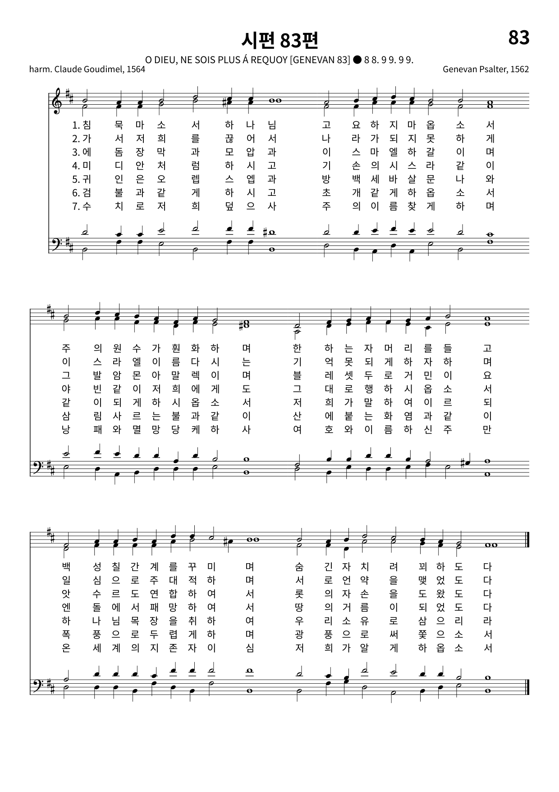

시편 83편
O DIEU, NE SOIS PLUS Á REQUOY [GENEVAN 83] · 8 8. 9 9. 9 9.
곡조: Genevan Psalter, 1562 · 화성: Claude Goudimel, 1564 · 가사: 개역한글판 시편 83편 편역(AI 초벌 편역판 · 신학 감수 전) · 7절
악보 PDF MusicXML(출력용) MusicXML(반주용, 전주·반복 포함) 개역한글 시편 83편 읽기

가사
1절 (시편 1-3)
침묵 마소서 하나님
고요하지 마옵소서
주의 원수가 훤화하며
한하는 자 머리를 들고
백성 칠 간계를 꾸미며
숨긴 자 치려 꾀하도다
침묵 마소서 하나님
고요하지 마옵소서
주의 원수가 훤화하며
한하는 자 머리를 들고
백성 칠 간계를 꾸미며
숨긴 자 치려 꾀하도다
2절 (시편 4-5)
가서 저희를 끊어서
나라가 되지 못하게
이스라엘 이름 다시는
기억 못 되게 하자 하며
일심으로 주 대적하며
서로 언약을 맺었도다
가서 저희를 끊어서
나라가 되지 못하게
이스라엘 이름 다시는
기억 못 되게 하자 하며
일심으로 주 대적하며
서로 언약을 맺었도다
3절 (시편 6-8)
에돔 장막과 모압과
이스마엘 하갈이며
그발 암몬 아말렉이며
블레셋 두로 거민이요
앗수르도 연합하여서
롯의 자손을 도왔도다
에돔 장막과 모압과
이스마엘 하갈이며
그발 암몬 아말렉이며
블레셋 두로 거민이요
앗수르도 연합하여서
롯의 자손을 도왔도다
4절 (시편 9-10)
미디안처럼 하시고
기손의 시스라같이
야빈같이 저희에게도
그대로 행하시옵소서
엔돌에서 패망하여서
땅의 거름이 되었도다
미디안처럼 하시고
기손의 시스라같이
야빈같이 저희에게도
그대로 행하시옵소서
엔돌에서 패망하여서
땅의 거름이 되었도다
5절 (시편 11-12)
귀인은 오렙 스엡과
방백 세바 살문나와
같이 되게 하시옵소서
저희가 말하여 이르되
하나님 목장을 취하여
우리 소유로 삼으리라
귀인은 오렙 스엡과
방백 세바 살문나와
같이 되게 하시옵소서
저희가 말하여 이르되
하나님 목장을 취하여
우리 소유로 삼으리라
6절 (시편 13-15)
검불과 같게 하시고
초개 같게 하옵소서
삼림 사르는 불과 같이
산에 붙는 화염과 같이
폭풍으로 두렵게 하며
광풍으로써 쫓으소서
검불과 같게 하시고
초개 같게 하옵소서
삼림 사르는 불과 같이
산에 붙는 화염과 같이
폭풍으로 두렵게 하며
광풍으로써 쫓으소서
7절 (시편 16-18)
수치로 저희 덮으사
주의 이름 찾게 하며
낭패와 멸망 당케 하사
여호와 이름하신 주만
온 세계의 지존자이심
저희가 알게 하옵소서
수치로 저희 덮으사
주의 이름 찾게 하며
낭패와 멸망 당케 하사
여호와 이름하신 주만
온 세계의 지존자이심
저희가 알게 하옵소서